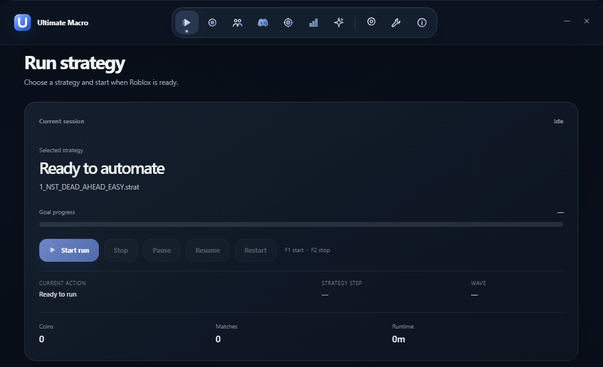

Equip towers and verify the selected map.
BUILT FOR TOWER DEFENSE SIMULATOR
Your grind.
Fully automated.
Record a TDS run once. Replay it, rotate strategies and keep the next match moving.
Free & open source1.5× / 2× timescale
ultimate-macro / run-strategy● OFFICIAL FOOTAGE
WHAT THE MACRO IS DOINGReady to automate a strategy
01 / 02✓STRATEGY SELECTEDHardcore Gem Suicide.strat
✓START RUNWhen Roblox is ready
◌REPLAY ACTIONSPlacements, upgrades and abilities
INSIDE ULTIMATE MACRO
Every control.
One place.
Run control, strategy editing, stats and Discord reports, all in one focused surface.

AROUND THE RUN
It handles the
parts between matches.
Ultimate Macro follows the strategy you selected, prepares the run, handles the ending and reports what happened.
Play back placements, upgrades, abilities and inputs.
Use Restart, Play Again or reconnection flows when available.
Collect rewards and send stats, logs or screenshots to Discord.
THE CORE LOOP
More runs.
Less watching.
Made for TDS menus, towers and match states, not generic mouse recording.
Record complete strategies
Capture placements, upgrades, selling, repositioning, target changes and abilities, then replay the run from a reusable strategy file.
Smart game handling
Equip towers, verify the map, handle match endings, reconnect when needed and use Restart or Play Again.
Community strategies
Load community-made .strat files, rotate them by run or time and use 1.5× or 2× timescale support.
FROM SETUP TO REPLAY
Get running in
three clear steps.
Set up the screen, record a strategy while you play, then let Ultimate Macro repeat it.
01
Download and extract
Download the latest release ZIP and extract every file into its own folder.
02
Install AutoHotkey v2
Ultimate Macro requires AutoHotkey 2.0. The older 1.1 release is not supported.
03
Run Main.ahk
Configure your TDS settings, launch Main.ahk and select or record a strategy.
STRATEGY RECORDER
Your strategies,
repeatable.
Turn a successful run into a reusable sequence of actions. See exactly what the macro will do before you press start.
COMMUNITY STRATEGY · EXAMPLE RUNRecording00:04:21
00:02SPAWN TOWERMinigunner1 · Slot 1
00:11UPGRADE TOWERMinigunner1 · Path 2
00:19CHANGE DJ TRACKDJ · Track 2
00:33USE ABILITYCommander · Call of Arms
Recorder ready
BEFORE YOU BEGIN
A consistent setup keeps every run accurate.
The current macro uses fixed interface positions and visual detection, so these settings are required for reliable playback.
System requirements
OPEN SOURCE, CLEAR PATHS
Use the release.
Inspect the source.
The main branch is the production/runtime tree. The dev branch is where source tooling, tests, CI and QA guidance live.
NEED TO KNOW
Before you
start a run.
The short version of what it can do, what you need and where to get help.
Join the Discord ↗What can Ultimate Macro automate?
It records and replays tower placements, upgrades, selling, repositioning, target changes, abilities and other match actions. It can also rotate strategies, equip required towers, replay finished matches and collect playtime rewards.
How do I make a strategy?
You play a run, record the actions you want to keep, then save them as a .strat file.
Can it handle the next match?
When a match ends, it can use Restart or Play Again when appropriate, verify the selected map and continue with the next run.
What do I need before installing?
Use Windows 10 or 11, install AutoHotkey v2.0 and the English (US) OCR language pack, set Windows scaling to 100% and configure the TDS settings listed in the ready check.
Can I use community strategies?
Yes. You can download community-made .strat files and load them in the macro.
Which download should I use?
For a ready-to-use install, download TDS_Macro.zip from the official releases. The main branch is the production/runtime tree; the dev branch is for development.
Is this affiliated with Roblox or TDS?
Ultimate Macro is not affiliated with Roblox Corporation or Paradoxum Games.
READY WHEN YOU ARE
Make the next run
repeatable.
Download Ultimate Macro, set up once and replay your strategy.
ULTIMATE MACRO●
Latest releaseWindows · AutoHotkey v2.0
Download TDS_Macro.zip ↗Free and open source · Use responsibly